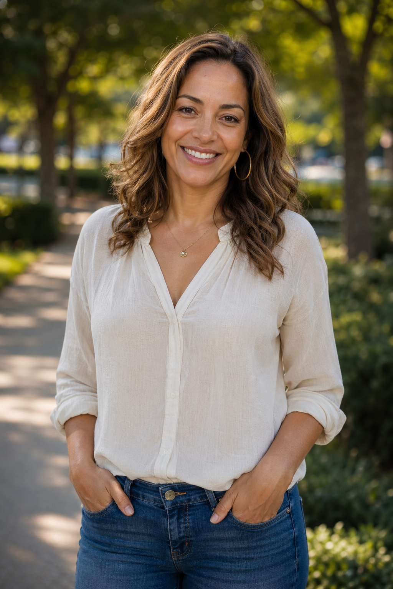
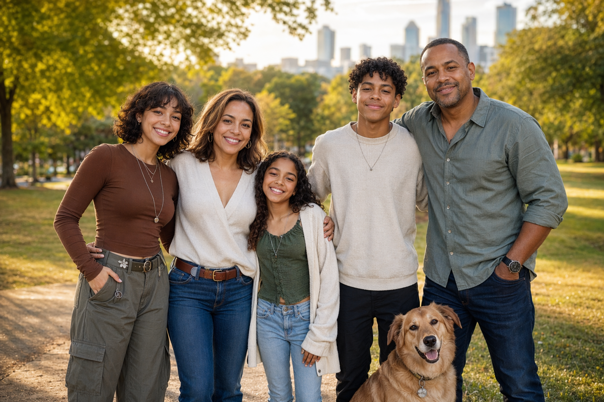
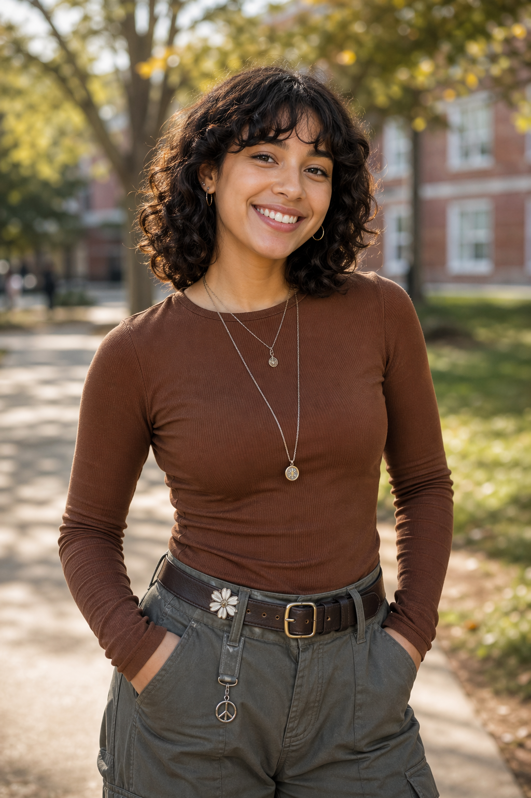
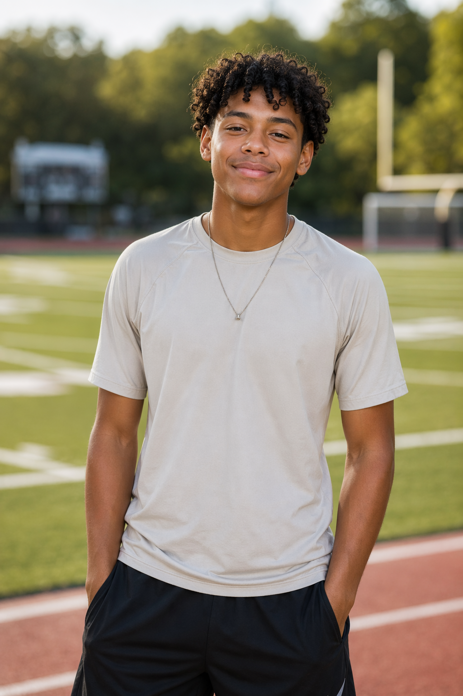
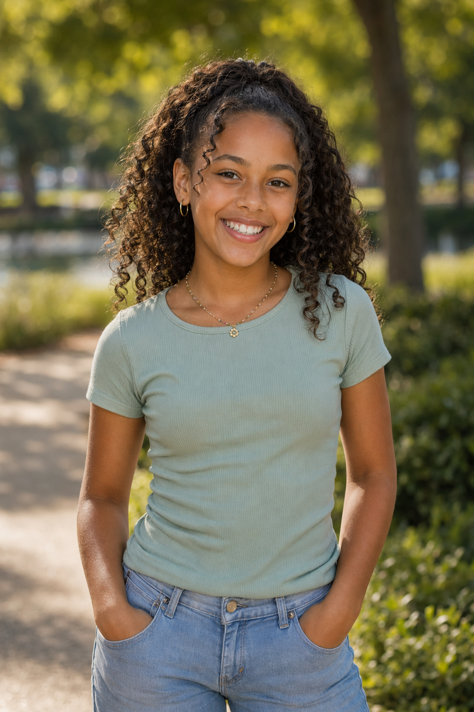

MotherSofia Ramos-Ibrahim
Pediatric nurse practitioner
- Helps run community health fairs
- Loves planning family food nights
- Keeps everyone organized and moving
Family Web Page
A modern family of five from Charlotte with Puerto Rican, Egyptian, and African American roots. They stay busy with sports, community events, travel, music, and outdoor adventures.

A close family that loves community events, outdoor trips, sports, and celebrating their blended cultural traditions together.
Meet The Family

MotherPediatric nurse practitioner
Civil engineer

Child 1College student in digital media

Child 2High school junior

Child 3Middle school student
Their last big trip was an eight-day family vacation to Costa Rica. They went zip-lining, hiking, kayaking, visited a wildlife rescue center, and took a cooking class together.
This page includes a family of five, both parents' occupations, activities for all three children, a family pet, and their last vacation, with visuals and separate sections for each family member.